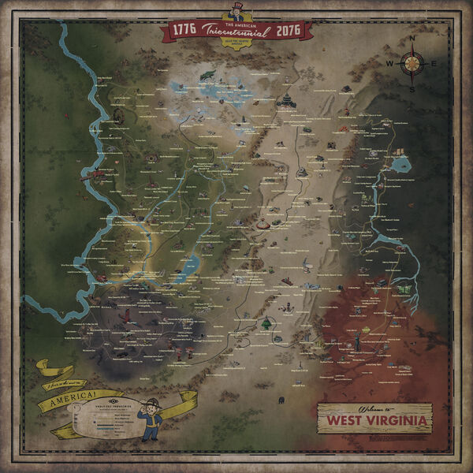

| Fallout 76 | Appalachia | Atomic Shop | Community |
|---|
Appalachia |

Located within the Eastern Commonwealth of the former United States,
the region was spared most of the destruction and carnage of the Great War due to its relative isolation and lack of strategic targets,
but much of the surviving human population nonetheless perished over the following years due to the Scorched Plague.
In 2102, the residents of Vault 76 emerged into Appalachia after twenty-five years of isolation and began to reclaim the wilderness.